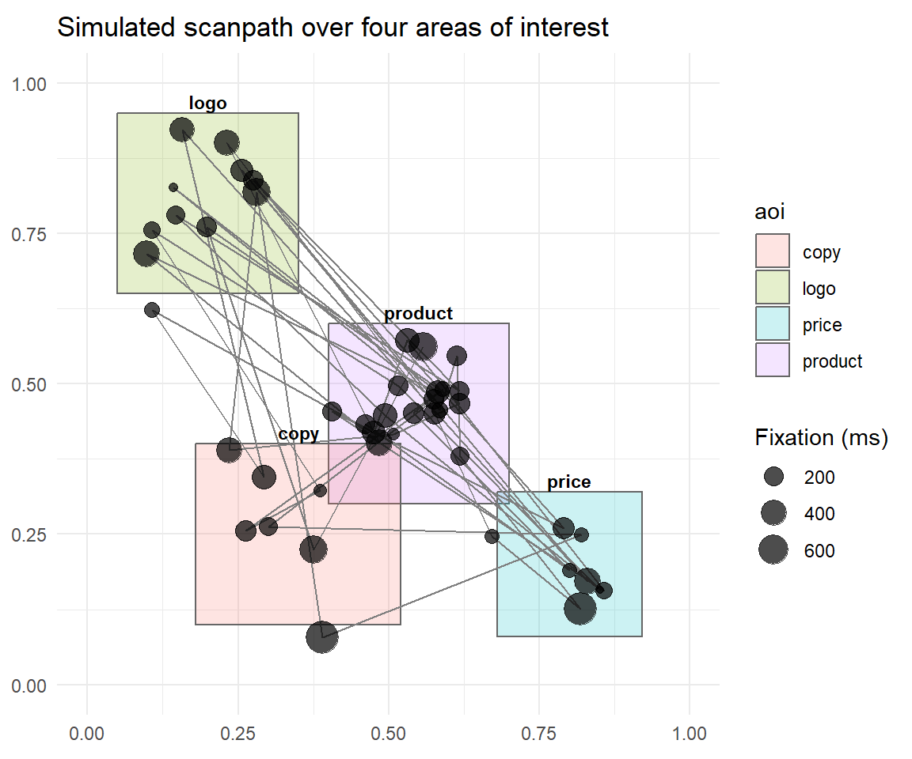
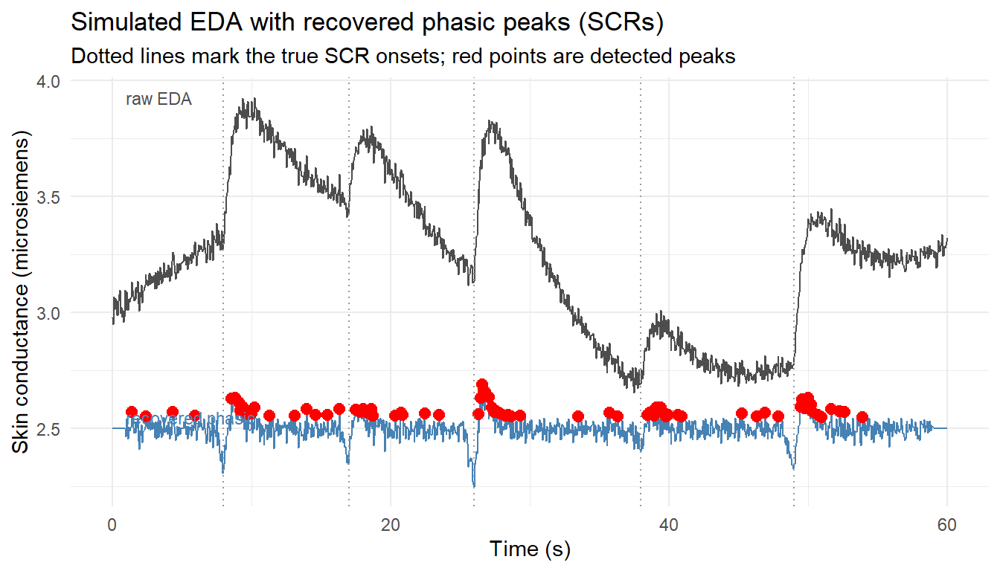
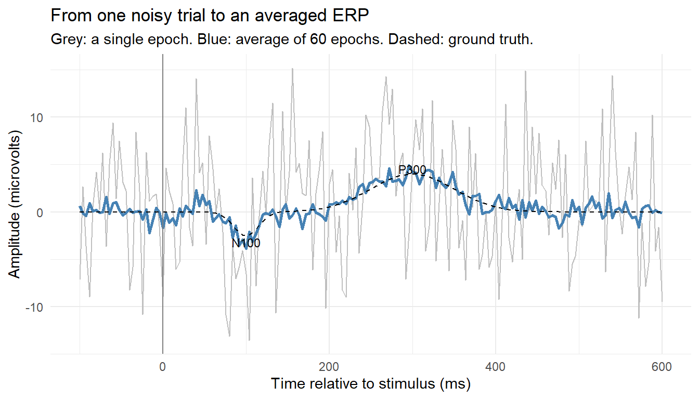

flowchart LR RS["Raw signal<br/>(gaze, skin conductance, scalp voltage)"] RS --> PP["Preprocessing"] PP --> FE["Feature extraction"] FE --> CI["Psychological construct<br/>(attention, emotion, valuation)"] CI --> VB["Validation<br/>against behavior"]
51 Sensor, Biometric, and Neurophysiological Data
Marketing has always wanted to measure what consumers will not, or cannot, tell it. A questionnaire asks a respondent to introspect, to translate a fleeting reaction into a number on a scale, and to do so honestly. Every step of that translation leaks information: attention wanders before it is reported, arousal subsides before it is named, social desirability rewrites the answer, and much of what actually drives choice never reaches conscious access at all. Sensor, biometric, and neurophysiological measurement is the attempt to bypass the self-report bottleneck by recording the body and the brain directly while a consumer looks at an advertisement, walks a store aisle, tastes a product, or decides whether to buy. The promise is a window onto attention, emotion, and valuation that is continuous, time-resolved, and less filtered by deliberation than anything a survey can deliver. The hazard, equally real, is that the window is narrow, expensive, easily over-interpreted, and ringed with ethical questions that a click-through rate never raised.
This chapter treats the family of physiological signals as one more modality of unstructured marketing data, a sibling to text (Chapter 43) and images (Chapter 45). As with those modalities, the intellectual move is to turn something that is not natively a number, a gaze trajectory, a trickle of sweat, a voltage at the scalp, into a feature vector that can enter the demand systems, choice models, and regressions the rest of this book develops. And as with those modalities, the central discipline is measurement: defining the construct first, choosing a signal and a set of features whose link to that construct is defensible, and validating against behavior before any causal claim is made. The difference is that here the sensor sits on the consumer’s body, which raises the stakes for cost, consent, and credibility far above what scraping reviews or product photos ever does. Figure 51.1 lays out that common measurement chain, the same steps every signal in this chapter passes through.
The umbrella term in industry is neuromarketing, though the toolkit is broader than the brain. It spans the eyes (eye-tracking), the autonomic nervous system (electrodermal activity, heart rate, facial muscle activity), and the central nervous system (electroencephalography and functional magnetic resonance imaging), increasingly supplemented by consumer wearables that stream heart rate and motion outside the lab. The academic literature that anchors this chapter ranges from the foundational survey of eye-tracking in marketing [Wedel and Pieters 2008, Foundations and Trends in Marketing, doi:10.1561/1700000011] to the integrative demonstration that neurophysiological measures can predict aggregate advertising response beyond traditional metrics [Venkatraman et al. 2015, Journal of Marketing Research, doi:10.1509/jmr.13.0593], with a sober counterweight in the review that named the field’s “hope and hype” problem [Ariely and Berns 2010, Nature Reviews Neuroscience, doi:10.1038/nrn2795]. The maturation of consumer neuroscience as a field is charted by a sequence of agenda-setting reviews—Yoon et al. (2012) on the bridge from decision neuroscience to consumer choice, Smidts et al. (2014) on the field’s research priorities, Plassmann et al. (2015) on its applications and methodological pitfalls, and Karmarkar and Plassmann (2019) on its past, present, and future—which together situate these signals within the broader unstructured-data program (Balducci and Marinova 2018) that organizes this part.
The chapter proceeds from the periphery inward and from the concrete to the conceptual. It first lays out the applications that motivate the methods. It then takes each signal in turn, eye-tracking, autonomic measures, and the electroencephalogram, developing the features that matter and giving a small, fully runnable simulation that builds the relevant quantities from scratch in base R and ggplot2. It treats functional neuroimaging and modern neural decoding conceptually, because those require hardware and data this book cannot simulate honestly, and it labels that boundary clearly. It closes on the three questions that decide whether a physiological study is worth running at all: is it valid, can it be afforded, and is it ethical, before surveying what neuromarketing vendors actually sell and where the credible line falls.
51.1 What the Signals Measure and Why Marketing Wants Them
The physiological toolkit maps onto a small set of marketing constructs that self-report measures poorly. It is worth fixing that mapping before descending into any one signal, because the recurring error in applied neuromarketing is to record a signal and then reach for whichever construct tells the most flattering story.
Visual attention is the province of eye-tracking. Where the eyes land, in what order, and for how long is the closest observable proxy for what a consumer is processing at a given instant, on the working assumption, the eye-mind hypothesis, that the point of gaze and the locus of attention largely coincide during active viewing. Marketing cares because attention is the scarce resource that all advertising competes for: an ad that is never fixated cannot persuade, a package that loses the shelf-scan race is never considered, and a web layout that buries the call to action forfeits conversions. The canonical applications are advertising layout, where eye-tracking quantifies how brand, pictorial, and text elements capture and transfer attention [Pieters and Wedel 2004, Journal of Marketing, doi:10.1509/jmkg.68.2.36.27794]; packaging and shelf design, where gaze data reveal which products win the first fixation and the considered set; and digital interfaces, where it diagnoses whether users even see the elements designers intended.
Emotional arousal, the intensity dimension of affect, is read from the autonomic nervous system. Electrodermal activity (EDA), historically the galvanic skin response (GSR), tracks sweat-gland activity driven by sympathetic arousal and rises within a couple of seconds of an emotionally engaging or surprising stimulus. It is cheap, robust, and a clean index of how much a consumer is aroused, but it is blind to valence: a delighted viewer and a disgusted one can show the same skin-conductance spike. Heart rate and heart-rate variability add a slower autonomic channel. Arousal matters to marketing because emotional intensity predicts memory encoding, ad likeability, and the sharing of content; the EDA trace over a thirty-second spot shows exactly which beats land and which fall flat [Poels and Dewitte 2006, Journal of Advertising Research, doi:10.2501/s0021849906060041].
Emotional valence, the pleasant-unpleasant sign of affect, is where autonomic measures need help. Facial electromyography (fEMG) supplies it by recording the electrical activity of specific muscles: the zygomaticus major that pulls the mouth into a smile, indexing positive affect, and the corrugator supercilii that knits the brow into a frown, indexing negative affect. Automated facial-expression coding from video pursues the same target without electrodes, trading sensitivity for scale and unobtrusiveness. Pairing EDA (arousal) with fEMG or facial coding (valence) recovers the two-dimensional affect space marketers actually want.
Attention, preference, and valuation in the brain are the domain of EEG and fMRI. Electroencephalography records voltage fluctuations at the scalp with millisecond resolution, ideal for timing-sensitive questions: did the brain register this brand at 200 milliseconds, did this ad frame elicit the attention-and-surprise signature, is left-frontal activity, an approach-motivation marker, stronger for this design. Functional MRI trades EEG’s temporal precision for spatial precision, localizing activity to deep structures EEG cannot see. Two of those structures carry outsized marketing weight: the ventral striatum (especially the nucleus accumbens), whose activity tracks anticipated reward and has repeatedly forecast purchasing and population-level success, and the medial prefrontal / orbitofrontal cortex, which encodes subjective value. The landmark demonstrations are that nucleus accumbens and medial-prefrontal activity predict whether individuals will buy a product [Knutson et al. 2007, Neuron, doi:10.1016/j.neuron.2006.11.010] and that marketing actions such as a stated price literally modulate the neural representation of experienced pleasantness [Plassmann et al. 2008, Proceedings of the National Academy of Sciences, doi:10.1073/pnas.0706929105].
Behavior in the wild is the frontier opened by consumer wearables. Smartwatches and fitness bands stream heart rate, motion, and increasingly EDA continuously, outside any lab, at population scale. They blur the line between a controlled physiological study and observational sensor data, and they import the same generated-feature and privacy cautions that govern the rest of this part, now attached to the consumer’s pulse.
Figure 51.2 organizes the toolkit by construct, grouping the instruments under what each one measures.
flowchart TB P["Physiological signals"] P --> AT["Visual attention"] P --> AR["Emotional arousal"] P --> VA["Emotional valence"] P --> BN["Brain: attention,<br/>value, timing"] AT --> ET["Eye-tracking<br/>(fixations, dwell, scanpath)"] AR --> EDA["Electrodermal activity"] AR --> HR["Heart rate / variability"] VA --> EMG["Facial EMG"] VA --> FC["Facial-expression coding"] BN --> EEG["EEG<br/>(ERP, band power, asymmetry)"] BN --> FMR["fMRI<br/>(ventral striatum, mPFC/OFC)"]
The two-dimensional logic of affect
A useful organizing frame is the circumplex of affect: emotion as a point in a plane of arousal (calm to excited) and valence (unpleasant to pleasant). Each peripheral signal measures roughly one axis. EDA and heart rate read arousal; facial EMG and facial-expression coding read valence. Neither alone locates an emotion; together they do. Most credible biometric ad-testing designs therefore pair an arousal channel with a valence channel rather than betting a conclusion on one signal.
Table 51.1 fixes the signal-to-construct mapping that organizes the rest of the chapter, pairing each instrument with the marketing construct it measures, its characteristic features, and a representative study from the verified literature.
| Signal | Construct | Characteristic features | Representative study |
|---|---|---|---|
| Eye-tracking | Visual attention | Fixations, dwell, time-to-first-fixation, scanpath | Pieters and Wedel (2004) |
| Electrodermal activity | Arousal (intensity) | Tonic level, phasic SCRs | Teixeira, Wedel, and Pieters (2012) |
| Facial EMG / coding | Valence (sign) | Zygomaticus / corrugator activity | Teixeira, Picard, and el Kaliouby (2014) |
| EEG | Attention, timing, approach | ERP (N100/P300), band power, frontal asymmetry | Venkatraman et al. (2015) |
| fMRI | Reward, subjective value | BOLD in nucleus accumbens, mPFC/OFC | Knutson et al. (2007) |
51.2 Eye-Tracking: Gaze, Fixations, and Areas of Interest
Eye-tracking is the most mature and most defensible of the physiological methods in marketing, with the longest record of converging validity against downstream behavior [Wedel and Pieters 2008, Foundations and Trends in Marketing, doi:10.1561/1700000011]. The eye does not glide smoothly over a scene. It moves in a sequence of fixations, brief pauses of roughly 200 to 300 milliseconds during which gaze is held nearly still and visual information is actually taken in, separated by saccades, ballistic jumps of 30 to 80 milliseconds during which vision is largely suppressed. Modern remote eye-trackers sample point of gaze at 60 to 1000 Hz; an event-detection algorithm then parses the raw gaze stream into fixations and saccades, typically by thresholding velocity or dispersion. Everything downstream is built on that parse.
The marketing-relevant features fall into two groups. The first describes individual fixations and the saccades between them: fixation count (how many times a region was looked at), fixation duration (how long each look lasted, an index of processing depth), saccade amplitude and direction, and the ordered scanpath itself. The second aggregates fixations over semantically meaningful regions of the stimulus, the areas of interest (AOIs). An AOI is a rectangle (or polygon) drawn around the brand logo, the product, the price, the headline. For each AOI the analyst computes dwell time (total fixation duration inside it), fixation count, and time to first fixation (TTFF), how long before the region first drew the eye, a measure of bottom-up salience. These per-AOI metrics are the currency of applied eye-tracking: they turn a gaze movie into a small table that says where attention went, in what order, and for how long.
The runnable demonstration below builds this pipeline end to end. It simulates a sequence of fixations over a unit-square stimulus whose looks cluster around four design elements, defines AOI rectangles, classifies each fixation into an AOI, and computes dwell time, fixation count, and time to first fixation per AOI. No eye-tracking hardware or proprietary software is involved; the point is to make the arithmetic of AOI analysis fully transparent.
Code
library(ggplot2)
set.seed(57)
## --- 1. Simulate a scanpath: fixations clustered around design elements ---
n_fix <- 45
centers <- list(logo = c(0.20, 0.80), product = c(0.55, 0.45),
price = c(0.80, 0.20), copy = c(0.35, 0.25))
probs <- c(logo = 0.18, product = 0.42, price = 0.22, copy = 0.18)
draw_aoi <- sample(names(probs), n_fix, replace = TRUE, prob = probs)
clamp01 <- function(z) pmin(pmax(z, 0), 1)
fix_x <- clamp01(vapply(draw_aoi, function(a) rnorm(1, centers[[a]][1], 0.06), numeric(1)))
fix_y <- clamp01(vapply(draw_aoi, function(a) rnorm(1, centers[[a]][2], 0.06), numeric(1)))
dur_ms <- round(rgamma(n_fix, shape = 2, scale = 110)) # fixation durations (ms)
fix <- data.frame(order = seq_len(n_fix), x = fix_x, y = fix_y, dur_ms = dur_ms)
## --- 2. Define areas of interest (AOIs) as rectangles ---
aoi <- data.frame(
aoi = c("logo", "product", "price", "copy"),
xmin = c(0.05, 0.40, 0.68, 0.18), xmax = c(0.35, 0.70, 0.92, 0.52),
ymin = c(0.65, 0.30, 0.08, 0.10), ymax = c(0.95, 0.60, 0.32, 0.40)
)
## --- 3. Classify each fixation into the AOI that contains it ---
classify <- function(x, y) {
hit <- which(x >= aoi$xmin & x <= aoi$xmax & y >= aoi$ymin & y <= aoi$ymax)
if (length(hit)) aoi$aoi[hit[1]] else NA_character_
}
fix$aoi <- mapply(classify, fix$x, fix$y)
## --- 4. Per-AOI metrics: dwell time, fixation count, time to first fixation ---
metrics <- do.call(rbind, lapply(aoi$aoi, function(a) {
idx <- which(fix$aoi == a)
ttff <- if (length(idx)) sum(fix$dur_ms[seq_len(min(idx) - 1)]) else NA_real_
data.frame(aoi = a, fix_count = length(idx),
dwell_ms = sum(fix$dur_ms[idx]), ttff_ms = ttff)
}))
metrics
#> aoi fix_count dwell_ms ttff_ms
#> 1 logo 10 2851 944
#> 2 product 19 4839 0
#> 3 price 7 1828 191
#> 4 copy 6 1785 635The table is the deliverable an eye-tracking study hands a brand manager: the product region wins the most fixations and dwell time, the price is reached quickly because it sits at high contrast in the lower right, and the body copy, fixated late and briefly, is at risk of being skipped. Plotting the scanpath over the AOIs makes the same point visually and is how such results are usually communicated.
Code
ggplot() +
geom_rect(data = aoi,
aes(xmin = xmin, xmax = xmax, ymin = ymin, ymax = ymax, fill = aoi),
alpha = 0.20, colour = "grey40") +
geom_path(data = fix, aes(x, y), colour = "grey50", linewidth = 0.4) +
geom_point(data = fix, aes(x, y, size = dur_ms), alpha = 0.7) +
geom_text(data = aoi, aes(x = (xmin + xmax)/2, y = ymax + 0.02, label = aoi),
size = 3, fontface = "bold") +
scale_size_continuous(name = "Fixation (ms)", range = c(1.5, 7)) +
coord_fixed(xlim = c(0, 1), ylim = c(0, 1)) +
labs(title = "Simulated scanpath over four areas of interest",
x = NULL, y = NULL) +
theme_minimal() + theme(legend.position = "right")
Two cautions travel with every AOI analysis. First, AOI metrics are only as meaningful as the AOIs are well drawn; gerrymandering a rectangle to capture or exclude fixations is the eye-tracking equivalent of p-hacking, and AOIs should be fixed before the data are seen. Second, gaze is necessary but not sufficient for persuasion. A consumer can fixate a disclaimer without reading it and read a headline without believing it. Eye-tracking measures the opportunity to process, which is why the strongest designs pair gaze with a downstream measure, recall, choice, or sales, rather than treating dwell time as the outcome of interest in itself.
51.3 Scroll Tracking: Attention in the Wild
Eye-tracking is the gold standard for visual attention, but it needs a camera, a calibration, and usually a lab—so it cannot follow the millions of choices people make by thumb on a phone. Scroll tracking is the naturalistic proxy that can. On a vertical mobile or web interface, the option in the viewport is the option being attended, so the scroll trajectory—which alternative is centered at each moment, how long it dwells there, how fast the user scrolls, how often they reverse direction—is a covert, hardware-free recording of the same attention dynamics an eye-tracker would capture, gathered in the wild during a real choice.
Leppänen (2026) develops scroll tracking as a process-tracing method and validates it against the leading models of how attention shapes choice. Across binary choices (gambles and consumer goods) presented on a scrollable interface, the scroll-derived metrics—dwell asymmetry, direction reversals, scroll speed—predict not just the choice but the decision maker’s subjective valuations, latent individual differences, and risk attitudes, and they improve every evidence-accumulation model tested.
The model they improve is the attentional drift-diffusion model (aDDM) of Krajbich, Armel, and Rangel (2010), the dominant account of how gaze and choice intertwine and the engine behind the eye-tracking-in-marketing lineage of Shi, Wedel, and Pieters (2013). In the aDDM a relative decision value \(\text{RDV}\) accumulates until it hits a boundary, but the drift at each instant is governed by what is currently attended: the attended option’s value drives accumulation at full weight while the unattended option’s is discounted by \(\theta\in(0,1)\), \[ \Delta\text{RDV}_t = d\big(v_{a(t)} - \theta\, v_{-a(t)}\big)\,\Delta t + \varepsilon_t, \qquad \varepsilon_t \sim \mathcal{N}(0, \sigma^2\Delta t), \tag{51.1}\] with a choice made when \(\text{RDV}\) reaches \(+B\) or \(-B\), \(a(t)\) the option attended at time \(t\), and \(d\) a drift scale. The consequence is a gaze cascade: because looking at an option boosts its accumulation, the option one dwells on is the option one tends to choose, over and above its value. Scroll tracking supplies exactly the \(a(t)\) sequence Equation 51.1 needs—which option is on screen—without an eye-tracker.
The demonstration below simulates the aDDM with attention alternating as a shopper scrolls between two options, then puts the paper’s two questions to the synthetic data: does the scroll-attention asymmetry predict choice, and do scroll metrics improve a choice model built on value alone?
Code
set.seed(57)
# Attention (which option is on screen, i.e., where the shopper has scrolled) modulates
# the drift of accumulated evidence. Parameters are illustrative, in the aDDM's range.
theta <- 0.35 # attentional discount: unattended option's value is down-weighted
d <- 0.0006 # drift scaling (per ms); sdw = accumulation noise; B = boundary
sdw <- 0.02; B <- 1; dt <- 10; Tmax <- 1000
sim_trial <- function(vL, vR) {
loc <- character(0); cur <- sample(c("L", "R"), 1) # alternating "scroll" dwells
while (length(loc) < Tmax) {
fd <- max(1L, round(rgamma(1, shape = 2, scale = 25)))
loc <- c(loc, rep(cur, fd)); cur <- if (cur == "L") "R" else "L"
}
loc <- loc[seq_len(Tmax)]
mu <- ifelse(loc == "L", d * dt * (vL - theta * vR), d * dt * (theta * vL - vR))
rdv <- cumsum(mu + rnorm(Tmax, 0, sdw * sqrt(dt)))
hit <- which(abs(rdv) >= B)[1]; if (is.na(hit)) hit <- Tmax
c(choiceL = as.integer(rdv[hit] > 0),
dwellL = sum(loc[seq_len(hit)] == "L") * dt,
dwellR = sum(loc[seq_len(hit)] == "R") * dt)
}
n <- 1500
vL <- runif(n, 0, 4); vR <- runif(n, 0, 4)
sim <- as.data.frame(t(vapply(seq_len(n), function(k) sim_trial(vL[k], vR[k]), numeric(3))))
sim$val_diff <- vL - vR
sim$dwell_diff <- (sim$dwellL - sim$dwellR) / (sim$dwellL + sim$dwellR) # scroll asymmetry
# 1. The scroll (gaze) cascade: the option dwelt on is chosen more, beyond its value.
cat(sprintf("P(choose left | dwelt more on LEFT) = %.2f\n", mean(sim$choiceL[sim$dwell_diff > 0])))
#> P(choose left | dwelt more on LEFT) = 0.63
cat(sprintf("P(choose left | dwelt more on RIGHT) = %.2f\n", mean(sim$choiceL[sim$dwell_diff < 0])))
#> P(choose left | dwelt more on RIGHT) = 0.37
# 2. Do scroll metrics improve a choice model over value alone?
m0 <- glm(choiceL ~ val_diff, family = binomial, data = sim) # value only
m1 <- glm(choiceL ~ val_diff + dwell_diff, family = binomial, data = sim) # + scroll attention
mcf <- function(m) 1 - m$deviance / m$null.deviance
cat(sprintf("\nValue-only model : pseudo-R2 %.3f\n", mcf(m0)))
#>
#> Value-only model : pseudo-R2 0.468
cat(sprintf("+ scroll attention : pseudo-R2 %.3f (LR chi-sq %.0f, df 1)\n",
mcf(m1), m0$deviance - m1$deviance))
#> + scroll attention : pseudo-R2 0.623 (LR chi-sq 324, df 1)The dwelt-on option is chosen well above chance regardless of value—the gaze cascade, now read from scroll rather than gaze—and adding one scroll-attention feature to a value-only choice model lifts its fit sharply, the miniature of the paper’s finding that scroll metrics improve every drift-diffusion model. Two cautions match the eye-tracking ones. Attention and preference are mutually causal—we dwell on what we come to prefer as much as we prefer what we dwell on—so a scroll metric predicts choice without cleanly explaining it; and screen position is a coarser attention proxy than foveation, since a user can leave an option on screen while thinking of something else. Because scroll tracking is also covert, it inherits in sharper form the consent and manipulation concerns of Section 51.7: a method that reads deliberation from an interface the firm itself designs is as usable for exploitation as for understanding.
51.4 Autonomic Measures: Electrodermal Activity and Facial EMG
Below the eyes lies the autonomic nervous system, whose sympathetic branch responds to emotionally engaging stimuli within seconds and outside voluntary control. The two workhorse channels are electrodermal activity and facial electromyography, the first indexing arousal and the second valence.
51.4.1 Electrodermal activity and phasic peak detection
EDA is recorded as skin conductance, in microsiemens, from electrodes on the fingers or palm. The signal decomposes into two components. The slow-moving tonic level (the skin conductance level, SCL) drifts over tens of seconds and reflects general arousal and individual baseline. Riding on top are phasic bursts, the skin conductance responses (SCRs), each a rapid rise within 1 to 3 seconds of an arousing event followed by a slower exponential recovery. The marketing payoff is in the phasic component: counting SCRs and locating them in time tells the analyst which moments of an advertisement or experience triggered sympathetic arousal. The standard pipeline therefore separates phasic from tonic and then detects peaks in the phasic signal.
The simulation below generates a sixty-second EDA trace at 20 Hz: a slow sinusoidal tonic drift, five phasic SCRs at known event times each modeled as the difference of two exponentials (a fast rise and a slow recovery), and a little measurement noise. It then recovers the phasic component by subtracting a smoothed (moving-average) estimate of the tonic baseline and applies a simple threshold-and-local-maximum peak detector. Recovering the events that were planted is the validation that the detector works.
Code
set.seed(57)
## --- 1. Simulate an EDA / GSR time series ---
fs <- 20; T_sec <- 60
t <- seq(0, T_sec, by = 1/fs)
tonic <- 3 + 0.4 * sin(2 * pi * t / 55) # slow drift (microsiemens)
scr_at <- c(8, 17, 26, 38, 49) # true SCR onset times (s)
scr_amp <- c(0.9, 0.6, 1.3, 0.5, 1.0) # true SCR amplitudes
phasic <- numeric(length(t))
for (i in seq_along(scr_at)) {
d <- t - scr_at[i]; d[d < 0] <- NA # response only after onset
bump <- scr_amp[i] * (exp(-d / 4) - exp(-d / 0.7)) # rise (0.7s) + recovery (4s)
bump[is.na(bump)] <- 0
phasic <- phasic + bump
}
eda <- tonic + phasic + rnorm(length(t), 0, 0.03)
## --- 2. Recover phasic component: subtract a smoothed tonic estimate ---
win <- 41 # ~2 s moving-average window
tonic_hat <- stats::filter(eda, rep(1/win, win), sides = 2)
tonic_hat <- as.numeric(tonic_hat)
phasic_hat <- eda - tonic_hat
phasic_hat[is.na(phasic_hat)] <- 0
## --- 3. Simple phasic peak (SCR) detection: local maxima above a threshold ---
thr <- 0.05
peak <- rep(FALSE, length(phasic_hat))
for (i in 2:(length(phasic_hat) - 1)) {
if (phasic_hat[i] > phasic_hat[i - 1] &&
phasic_hat[i] >= phasic_hat[i + 1] &&
phasic_hat[i] > thr) peak[i] <- TRUE
}
detected <- data.frame(t = t[peak], amp = phasic_hat[peak])
detected
#> t amp
#> 1 1.40 0.07083558
#> 2 2.40 0.05152824
#> 3 4.35 0.07185540
#> 4 5.95 0.05447069
#> 5 8.55 0.13068158
#> 6 8.85 0.13289388
#> 7 8.95 0.12390279
#> 8 9.10 0.11241352
#> 9 9.20 0.07751505
#> 10 9.40 0.09389897
#> 11 9.75 0.06086094
#> 12 10.00 0.06358030
#> 13 10.25 0.09024380
#> 14 11.30 0.05436665
#> 15 13.10 0.05561113
#> 16 14.00 0.08300947
#> 17 14.60 0.05943678
#> 18 15.45 0.05797576
#> 19 16.35 0.08319310
#> 20 17.50 0.08152214
#> 21 17.70 0.07663389
#> 22 17.80 0.07258495
#> 23 17.90 0.07917010
#> 24 18.05 0.08360711
#> 25 18.30 0.06852376
#> 26 18.65 0.08464624
#> 27 18.75 0.05476619
#> 28 20.35 0.05680865
#> 29 20.75 0.06851743
#> 30 20.85 0.05761175
#> 31 22.45 0.06445440
#> 32 23.50 0.05755598
#> 33 26.30 0.06250763
#> 34 26.50 0.13199615
#> 35 26.60 0.19087819
#> 36 26.70 0.16544623
#> 37 26.80 0.15843493
#> 38 26.90 0.14244557
#> 39 27.10 0.13442957
#> 40 27.30 0.09140384
#> 41 27.45 0.07004667
#> 42 27.60 0.07379925
#> 43 27.85 0.06458922
#> 44 28.25 0.05686716
#> 45 28.45 0.05950573
#> 46 28.70 0.05135912
#> 47 29.30 0.05442665
#> 48 33.50 0.05235625
#> 49 35.75 0.06976987
#> 50 36.35 0.05075815
#> 51 38.45 0.05913411
#> 52 38.65 0.06683596
#> 53 38.85 0.07543993
#> 54 38.95 0.05533035
#> 55 39.10 0.09025559
#> 56 39.45 0.09058911
#> 57 39.65 0.06721635
#> 58 39.80 0.05227606
#> 59 39.95 0.05756663
#> 60 40.65 0.05935335
#> 61 40.90 0.05136468
#> 62 45.25 0.06385531
#> 63 46.30 0.05306763
#> 64 46.90 0.06795701
#> 65 47.85 0.05316991
#> 66 49.50 0.09538385
#> 67 49.60 0.12683296
#> 68 49.75 0.08897919
#> 69 49.85 0.08731386
#> 70 50.00 0.13272589
#> 71 50.20 0.10486013
#> 72 50.30 0.07368699
#> 73 50.70 0.05718910
#> 74 51.00 0.05008832
#> 75 51.65 0.08357539
#> 76 52.25 0.07626737
#> 77 52.65 0.07191442
#> 78 53.90 0.05051339Code
eda_df <- data.frame(t = t, eda = eda, phasic_hat = phasic_hat)
ggplot(eda_df, aes(t)) +
geom_line(aes(y = eda), colour = "grey30") +
geom_line(aes(y = phasic_hat + 2.5), colour = "steelblue") +
geom_point(data = detected, aes(x = t, y = amp + 2.5),
colour = "red", size = 2.4) +
geom_vline(xintercept = scr_at, linetype = "dotted", colour = "grey60") +
annotate("text", x = 1, y = 2.55, label = "recovered phasic",
hjust = 0, size = 3, colour = "steelblue") +
annotate("text", x = 1, y = max(eda), label = "raw EDA",
hjust = 0, size = 3, colour = "grey30") +
labs(title = "Simulated EDA with recovered phasic peaks (SCRs)",
subtitle = "Dotted lines mark the true SCR onsets; red points are detected peaks",
x = "Time (s)", y = "Skin conductance (microsiemens)") +
theme_minimal()
The detector recovers the five planted responses near their onsets. The exercise also exposes the judgment calls that make EDA analysis non-trivial in practice: the tonic estimator’s window length, the detection threshold, and a minimum inter-peak interval all trade sensitivity against false alarms, and motion artifacts in real recordings produce spurious spikes that no naive detector distinguishes from genuine SCRs. The central interpretive limit remains valence-blindness. An SCR says the consumer was aroused at second 26; it cannot say whether the arousal was delight or alarm. That is the gap facial measures fill.
51.4.2 Facial electromyography and expression coding
Facial EMG places electrodes over specific muscles and records their electrical activity, typically the zygomaticus major (smiling, positive affect) and the corrugator supercilii (frowning, negative affect). Because these muscles respond even to expressions too faint to see, fEMG is sensitive to low-intensity and even covert affective reactions, which is its advantage over visible-expression coding. Its cost is intrusiveness: electrodes on the face are incompatible with naturalistic viewing and unusable at scale.
Automated facial-expression coding from ordinary video pursues the same valence target without electrodes. A computer-vision model (the image-as-data machinery of Chapter 45) locates the face, tracks landmarks, and classifies action units or basic emotions frame by frame, yielding a valence time series alongside the EDA arousal trace. The trade is sensitivity and rigor for unobtrusiveness and scale: webcam emotion coding can run in a panelist’s living room across thousands of viewers, but it misses the subthreshold activations fEMG catches and inherits every bias of the training data behind the classifier. The signal-processing logic of feature extraction and thresholding is identical to the EDA demonstration above; only the sensor and the construct change, from sympathetic arousal to facial valence.
51.5 Electroencephalography and the Event-Related Potential
The electroencephalogram records voltage fluctuations at the scalp produced by the synchronized activity of large populations of cortical neurons, sampled at hundreds of samples per second across a montage of electrodes. Its defining strength is temporal resolution: EEG sees the brain’s response unfold millisecond by millisecond, which makes it the instrument of choice for questions about the timing and sequence of processing that fMRI, with its sluggish hemodynamic signal, cannot answer. Its weakness is spatial resolution; scalp voltage is a blurred mixture of many sources, so EEG localizes poorly.
Two feature families dominate marketing EEG. The first is spectral power in frequency bands, the rhythmic content of the ongoing signal. Frontal alpha asymmetry (relative left-versus-right frontal power in the 8 to 13 Hz band) is read as an index of approach versus avoidance motivation, and is used to gauge whether a stimulus is appetitive. Theta and beta power are linked to engagement and attention; Eijlers, Boksem, and Smidts (2020) show that an EEG-derived index of neural arousal relates to advertising success, a band-power analogue of the EDA arousal trace. The second family is the event-related potential (ERP), the focus of the runnable demonstration below.
An ERP is the brain’s averaged electrical response time-locked to a repeated event, the onset of a brand logo, a product image, a price. Any single trial is buried in noise: ongoing alpha rhythm, muscle activity, and measurement noise dwarf the few microvolts of stimulus-evoked signal. The foundational trick is signal averaging. If the evoked response is identical across trials while the noise is independent and zero-mean, then averaging \(n\) epochs (short windows time-locked to the event) preserves the response and shrinks the noise standard deviation by a factor of \(\sqrt{n}\). The averaged waveform reveals a stereotyped sequence of peaks, components named by polarity and latency: an N100 (a negative deflection near 100 ms, early sensory processing), a P200, and a P300 (a positive deflection near 300 ms, linked to attention, surprise, and stimulus evaluation, and of obvious marketing interest as a candidate signature of “this caught me”).
The simulation builds an ERP from scratch. It defines a ground-truth evoked waveform (a negative bump near 100 ms and a larger positive bump near 300 ms), generates sixty noisy single-trial epochs by adding that waveform to independent noise and an ongoing-alpha oscillation of random phase, and then averages the epochs to recover the ERP. The contrast between a single messy trial and the clean average is the entire logic of evoked-response analysis made visible.
Code
set.seed(57)
## --- 1. Define the ground-truth evoked response (an N100 and a P300) ---
fs2 <- 250 # samples per second
ep_t <- seq(-0.1, 0.6, by = 1/fs2) # epoch window: -100 to 600 ms
erp_true <- function(tt) # microvolts
-2.5 * exp(-((tt - 0.10)^2) / (2 * 0.015^2)) + # N100
4.0 * exp(-((tt - 0.30)^2) / (2 * 0.050^2)) # P300
mu <- erp_true(ep_t)
## --- 2. Simulate noisy single-trial epochs: signal + alpha + white noise ---
n_tr <- 60
epochs <- matrix(rnorm(n_tr * length(ep_t), 0, 6), nrow = n_tr) # white noise
epochs <- sweep(epochs, 2, mu, "+") # add evoked response
for (i in seq_len(n_tr)) # add 10 Hz alpha
epochs[i, ] <- epochs[i, ] + 3 * sin(2 * pi * 10 * ep_t + runif(1, 0, 2 * pi))
## --- 3. Average across trials to recover the ERP ---
erp_hat <- colMeans(epochs)
c(P300_peak_uV = round(max(erp_hat), 2),
P300_lat_s = round(ep_t[which.max(erp_hat)], 3),
N100_peak_uV = round(min(erp_hat), 2),
N100_lat_s = round(ep_t[which.min(erp_hat)], 3))
#> P300_peak_uV P300_lat_s N100_peak_uV N100_lat_s
#> 4.930 0.296 -3.840 0.100Code
erp_df <- data.frame(t_ms = ep_t * 1000,
single = epochs[1, ],
average = erp_hat,
truth = mu)
ggplot(erp_df, aes(t_ms)) +
geom_line(aes(y = single), colour = "grey75") +
geom_line(aes(y = average), colour = "steelblue", linewidth = 1) +
geom_line(aes(y = truth), colour = "black", linetype = "dashed") +
geom_vline(xintercept = 0, colour = "grey50") +
annotate("text", x = 100, y = -3.2, label = "N100", size = 3) +
annotate("text", x = 300, y = 4.5, label = "P300", size = 3) +
labs(title = "From one noisy trial to an averaged ERP",
subtitle = "Grey: a single epoch. Blue: average of 60 epochs. Dashed: ground truth.",
x = "Time relative to stimulus (ms)", y = "Amplitude (microvolts)") +
theme_minimal()
A single epoch (grey) is dominated by alpha and noise; the evoked components are invisible. The sixty-trial average (blue) recovers the N100 and P300 and tracks the ground-truth waveform (dashed) closely. This is why ERP designs require many repeated presentations and tight time-locking, and why a marketing ERP claim built on a handful of trials should be distrusted. The applied payoff is that ERP components index processes self-report cannot time: the P300’s amplitude to a brand or price reflects how much attention and evaluative resource the stimulus commanded, and frontal asymmetry over the same epochs indexes approach motivation. Both have been used to compare creative executions and to forecast choice, as the next section’s prediction results show.
51.6 Functional Neuroimaging and Neural Prediction
The methods to this point can be simulated honestly in a few lines of R because their signals are one-dimensional time series with well-understood structure. Functional magnetic resonance imaging and modern neural decoding cannot, and this section treats them conceptually and clearly labels them as such. fMRI does not measure neural firing directly; it measures the blood-oxygen-level-dependent (BOLD) signal, a slow hemodynamic proxy for local neural activity, across roughly a hundred thousand volumetric pixels (voxels) of the brain, every couple of seconds. The analytic workflow, preprocessing, fitting a general linear model that regresses each voxel’s time series on the experimental design convolved with a hemodynamic response function, and correcting for the massive multiple-comparisons problem of testing every voxel, is a field of its own and is not reproduced here.
Conceptual section: not simulated
The fMRI and deep neural-decoding material below is described, not demonstrated. Unlike the eye-tracking, EDA, and ERP sections, there is no honest way to simulate a BOLD volume or a trained decoder in base R without manufacturing a result that would mislead. These methods require specialized hardware, large datasets, and dedicated pipelines. Treat the claims here as pointers to a literature, each anchored to a verified source, rather than as reproducible code.
What fMRI buys marketing is access to deep valuation circuitry that scalp EEG and peripheral sensors cannot see. Two structures recur. The ventral striatum / nucleus accumbens tracks anticipated reward and gain; the medial prefrontal and orbitofrontal cortex encode integrated subjective value. The foundational consumer result is that activity in these regions, measured while people viewed products and prices, predicted their subsequent purchase decisions trial by trial [Knutson et al. 2007, Neuron, doi:10.1016/j.neuron.2006.11.010]. A second landmark showed the causal porousness of “experienced value” itself: telling subjects a wine was expensive raised both their reported pleasantness and the orbitofrontal activity encoding it, so a marketing action reshaped the neural signal of experience, not merely its report [Plassmann et al. 2008, PNAS, doi:10.1073/pnas.0706929105]. The critical review that maps and tempers this literature is the “branding the brain” survey [Plassmann, Ramsoy, and Milosavljevic 2012, Journal of Consumer Psychology, doi:10.1016/j.jcps.2011.11.010], with the broader field overview in Hubert and Kenning [2008, Journal of Consumer Behaviour, doi:10.1002/cb.251].
The most consequential idea in this section is neuroforecasting: using neural activity measured in a small sample to predict aggregate, population-level market outcomes, often outperforming the same small sample’s self-reports. The logic is that brain signals from a handful of people capture a shared valuation process that generalizes to the market, even when those same people’s stated preferences do not. The evidence is striking and converging. Ventral-striatal activity in a small group of adolescents predicted the national sales of songs years later, while the group’s own likeability ratings did not [Berns and Moore 2012, Journal of Consumer Psychology, doi:10.1016/j.jcps.2011.05.001]. Brain responses to movie trailers predicted both individual preferences and population-wide box-office success [Boksem and Smidts 2015, Journal of Marketing Research, doi:10.1509/jmr.13.0572]. Nucleus-accumbens activity forecast the market-level funding success of online loan and crowdfunding requests beyond what the requests’ features or subjects’ choices predicted [Genevsky, Yoon, and Knutson 2017, Journal of Neuroscience, doi:10.1523/jneurosci.1633-16.2017]. And in the study that ties the whole toolkit to marketing practice, a model combining neurophysiological measures (including fMRI ventral-striatum activity) predicted the real-world, market-level elasticity of advertising response beyond what traditional self-report and behavioral measures achieved [Venkatraman et al. 2015, Journal of Marketing Research, doi:10.1509/jmr.13.0593; Venkatraman et al. (2015)]. The pattern generalizes across domains: affective neural responses forecast the market-level success of online microlending appeals (Genevsky and Knutson 2015), and a small “neural focus group” predicted population-level responses to a public-health media campaign that the participants’ own self-reports missed (Falk, Berkman, and Lieberman 2012). Knutson and Genevsky (2018) distill the common logic—neural signals from a handful of people recover a shared valuation process that aggregates to the market—into a general account of neuroforecasting aggregate choice, which is the single most defensible claim the modality makes because it rests on out-of-sample prediction rather than reverse inference.
EEG-based prediction sits alongside the fMRI results and, unlike them, can be related to the runnable ERP simulation above. EEG features have been shown to predict individuals’ subsequent product choices out of sample [Telpaz, Webb, and Levy 2015, Journal of Marketing Research, doi:10.1509/jmr.13.0564], and EEG has been used to study how social context shapes neural responses to branded luxury goods [Pozharliev et al. 2015, Journal of Marketing Research, doi:10.1509/jmr.13.0560].
The frontier beyond mass-univariate fMRI is neural decoding: multivariate and deep-learning models trained to read a distributed pattern of brain activity and output the stimulus or the choice that produced it, reversing the usual forward direction of analysis. In principle a decoder could read preference or attention from a brain-state pattern; in practice marketing decoding is constrained by tiny sample sizes, low signal-to-noise, and the ever-present risk of overfitting a flexible model to a handful of subjects. These methods are powerful and genuinely advancing, and they are also the easiest place in the entire toolkit to fool oneself, which is the cue to turn to validity and ethics.
51.7 Validity, Cost, and Ethics
No part of marketing measurement is more prone to over-claiming than this one, and the discipline that keeps it honest rests on three questions. Figure 51.3 arranges those questions as sequential gates a study must clear before it is worth running.
flowchart LR SP["Physiological study<br/>proposal"] SP --> VD["Validity<br/>(validated construct-signal mapping,<br/>predictive over reverse inference)"] VD --> CO["Cost and external validity<br/>(expense, sample size, realism)"] CO --> ETH["Ethics<br/>(consent, autonomy,<br/>inference beyond consent)"] ETH --> RN["Run and triangulate<br/>with behavior and field data"]
Validity. The first temptation is reverse inference: observing activity in a brain region and inferring the mental state usually associated with it. Because the nucleus accumbens activates in reward anticipation, it is tempting to read accumbens activity as “the consumer wants this.” But brain regions are many-to-one: the same region participates in many processes, so its activation does not uniquely imply any one of them. Reverse inference is a probabilistic argument that is only as strong as the selectivity of the region for the inferred process, and it is routinely abused in popular neuromarketing. The corresponding peripheral error is reading valence into a valence-blind arousal signal, calling an EDA spike “excitement” when it might be discomfort. The defenses are the ordinary ones of measurement: pre-register the construct-to-signal mapping, validate physiological features against behavioral ground truth, and prefer predictive validity (does the signal forecast held-out choice or sales) over storytelling. The neuroforecasting results earn their credibility precisely because they predict out-of-sample market outcomes rather than narrating a scan. The field’s own cautionary literature is essential reading here [Ariely and Berns 2010, Nature Reviews Neuroscience, doi:10.1038/nrn2795; Plassmann, Ramsoy, and Milosavljevic 2012, Journal of Consumer Psychology, doi:10.1016/j.jcps.2011.11.010].
Cost and external validity. The methods are ordered roughly by expense and inversely by ecological realism. Eye-tracking and EDA are relatively cheap, portable, and tolerant of naturalistic settings; EEG is moderate in cost but demanding in setup; fMRI is extremely expensive (scanner time, physicists, small samples) and maximally unnatural, requiring a motionless supine subject in a noisy magnet. The expense forces small samples, which limits power and inflates the danger of false positives, and the artificiality threatens external validity: a brain response to an ad viewed horizontally in a scanner may not transfer to the same ad glimpsed on a phone. A credible program treats physiological measures as one converging line of evidence triangulated with behavior and field data, not as an oracle that licenses skipping the market test.
Ethics. Physiological and neural data are intimate in a way click logs are not, and three concerns deserve explicit weight.
The ethics of measuring the body and brain
- Informed consent and bodily privacy. Biometric and neural signals are sensitive personal data. Subjects must understand what is recorded, how it is stored, and how it will be used, and consent must be genuine rather than buried in a panel agreement. Wearable streams collected in the field make consent harder, not easier, because the consumer rarely registers that a heart-rate trace is being repurposed for marketing.
- The autonomy and manipulation worry. The stated aspiration of some neuromarketing, to find a “buy button” and bypass deliberation, is ethically loaded. Measurement that is benign for diagnosing an ad’s clarity becomes troubling when its purpose is to exploit non-conscious vulnerabilities, and most troubling for vulnerable populations such as children. The capability is routinely overstated by vendors, but the intent still warrants scrutiny.
- Inference beyond consent and regulation. Physiological data can leak information the subject never meant to share, health conditions, neurological markers, affective states, raising re-identification and discrimination risks. Such data fall under strict regimes (special-category data under GDPR, biometric-privacy statutes), and the governance, retention, and consent obligations of Chapter 24 apply with full force.
The honest summary is that the ethical floor for physiological marketing research is higher than for behavioral data, the validity bar is harder to clear, and the cost is steep, all of which is why the credible academic literature is comparatively small and the commercial literature comparatively loud.
51.8 Industry Practice: What Vendors Sell and What Is Credible
Neuromarketing is a commercial industry as much as an academic field, and the two should not be confused. A tier of vendors sells ad and shopper testing built on the methods of this chapter: webcam-based eye-tracking and facial-expression coding at panel scale, EDA and EEG bundled into “neuro” ad-testing products, and shelf and packaging studies in physical or virtual stores. The credible core of this offering is real and useful. Eye-tracking for attention diagnosis, EDA and facial coding for moment-by-moment emotional response, and EEG engagement metrics for creative comparison are legitimate tools when used to inform design, and they earn their keep by catching problems, an unseen call to action, a flat emotional arc, a confusing layout, that self-report panels miss.
The line between credible and incredible practice can be drawn sharply.
What is credible. Aggregate, relative, predictive use. Comparing two ad executions on attention and arousal, validating a physiological index against actual recall or sales, using a large panel and reporting effect sizes, and treating the measure as one input among several. The peer-reviewed neuroforecasting literature is the proof of concept that, done carefully, neural and physiological signals can predict market outcomes [Venkatraman et al. 2015, doi:10.1509/jmr.13.0593; Boksem and Smidts 2015, doi:10.1509/jmr.13.0572; Genevsky, Yoon, and Knutson 2017, doi:10.1523/jneurosci.1633-16.2017].
What is not. Single-subject “brain reading,” the claim of a literal buy button, reverse-inference storytelling (“this lit up the pleasure center, so consumers love it”), tiny unreplicated samples sold as definitive, and proprietary black-box indices with no published validation. A useful diagnostic when evaluating a vendor is to ask the measurement questions from this book: what is the construct, what is the signal, how was the mapping validated, against what ground truth, at what sample size, and does the index predict anything out of sample. Vendors with credible answers exist; vendors who deflect to the mystique of neuroscience do not.
The practical posture for a marketing scientist is therefore neither credulity nor dismissal. The signals are real, the academic results are genuine, and the commercial hype is also real. The job is to use the methods where their validity is established, to triangulate them with behavior and field experiments, and to discount any claim that the brain or the body has revealed a truth no market test could confirm.
Replication resources: physiological signals
The eye-tracking, EDA, and ERP demonstrations in this chapter are fully reproducible in base R and ggplot2—they are the honest, runnable artifacts of the modality. For real data, the open ecosystem is mature: EDA decomposition (Ledalab, neurokit2 in Python), eye-movement event detection and AOI analysis (PyGaze, gazepoint/eyetrackingR), and EEG/ERP processing (EEGLAB, MNE-Python) are standard. By contrast, the empirical neuro studies cited here—being fMRI/EEG work with small samples of identifiable human subjects, much of it predating data-sharing mandates—rarely ship public replication packages; some authors share stimuli or aggregate data on request or via OpenNeuro, but a URL should be confirmed on the article page rather than assumed.
51.9 Frontier and Expansion
Several developments are pushing this modality from a niche lab method toward a scalable data stream, and each imports the cautions developed above into a new setting.
Consumer wearables and ambulatory sensing are the largest shift. Smartwatches and bands already stream heart rate, motion, and increasingly EDA continuously, from millions of consumers, outside any laboratory. This collapses the distinction between a controlled physiological study and observational sensor data, offering arousal and activity signals at population scale while raising acute consent and privacy questions, because a consumer who bought a fitness tracker did not obviously agree to have their pulse mined for ad response.
Webcam and remote sensing remove the hardware barrier for the cheaper signals. Browser-based eye-tracking and facial-expression coding run on ordinary laptop cameras, trading precision for reach and enabling physiological-style measurement on large online panels. The same image-as-data pipeline of Chapter 45 supplies the expression classifier, with the same dependence on training data and the same risk of biased inference.
Virtual and augmented reality offer a route around the external-validity problem. Immersive headsets can place a shopper in a photorealistic virtual store while recording gaze (eye-tracking is now built into many headsets), and increasingly heart rate and EDA, in a setting far more naturalistic than a scanner yet fully instrumented and controllable. VR shelf tests are a plausible near-term bridge between the realism of the field and the measurement density of the lab.
Multimodal fusion is the unifying frontier and the link back to the rest of this part. The richest physiological designs already combine channels, gaze for attention, EDA for arousal, facial coding for valence, EEG for timing, and the natural next step is to fuse them with the text, image, audio, and video features of the surrounding chapters and the foundation-model methods that learn joint representations across modalities. A consumer’s reaction to a video advertisement is at once a gaze pattern, an arousal trace, a facial-valence series, and a neural response, and modeling them jointly, against the ad’s own multimodal content, is where this chapter meets the multimodal-fusion capstone of the part.
The throughline, finally, is the one that governs every modality in this part. A gaze movie, a skin-conductance trace, a scalp voltage, and a BOLD volume are all turned into feature vectors by lossy, assumption-laden procedures, and those vectors are generated regressors whose errors can correlate with the outcomes they are used to explain. The body and the brain offer marketing a signal of unusual intimacy and unusual promise. They reward the researcher who defines the construct first, validates the measure against behavior, respects the consumer whose physiology is being recorded, and distrusts any story the data tell too easily.
Balducci, Bitty, and Detelina Marinova. 2018. “Unstructured Data in Marketing.” Journal of the Academy of Marketing Science 46 (4): 557–90. https://doi.org/10.1007/s11747-018-0581-x.
Eijlers, Esther, Maarten A. S. Boksem, and Ale Smidts. 2020. “Measuring Neural Arousal for Advertisements and Its Relationship with Advertising Success.” Frontiers in Neuroscience 14: 736. https://doi.org/10.3389/fnins.2020.00736.
Falk, Emily B., Elliot T. Berkman, and Matthew D. Lieberman. 2012. “From Neural Responses to Population Behavior: Neural Focus Group Predicts Population-Level Media Effects.” Psychological Science 23 (5): 439–45. https://doi.org/10.1177/0956797611434964.
Genevsky, Alexander, and Brian Knutson. 2015. “Neural Affective Mechanisms Predict Market-Level Microlending.” Psychological Science 26 (9): 1411–22. https://doi.org/10.1177/0956797615588467.
Karmarkar, Uma R., and Hilke Plassmann. 2019. “Consumer Neuroscience: Past, Present, and Future.” Organizational Research Methods 22 (1): 174–95. https://doi.org/10.1177/1094428117730598.
Knutson, Brian, and Alexander Genevsky. 2018. “Neuroforecasting Aggregate Choice.” Current Directions in Psychological Science 27 (2): 110–15. https://doi.org/10.1177/0963721417737877.
Knutson, Brian, Scott Rick, G. Elliott Wimmer, Drazen Prelec, and George Loewenstein. 2007. “Neural Predictors of Purchases.” Neuron 53 (1): 147–56. https://doi.org/10.1016/j.neuron.2006.11.010.
Krajbich, Ian, Carrie Armel, and Antonio Rangel. 2010. “Visual Fixations and the Computation and Comparison of Value in Simple Choice.” Nature Neuroscience 13 (10): 1292–98. https://doi.org/10.1038/nn.2635.
Leppänen, Ilkka. 2026. “Attention in Motion: Using Scroll Tracking to Measure the Dynamics of Preferential Choice.” Management Science. https://doi.org/10.1287/mnsc.2024.06264.
Pieters, Rik, and Michel Wedel. 2004. “Attention Capture and Transfer in Advertising: Brand, Pictorial, and Text-Size Effects.” Journal of Marketing 68 (2): 36–50. https://doi.org/10.1509/jmkg.68.2.36.27794.
Plassmann, Hilke, Vinod Venkatraman, Scott Huettel, and Carolyn Yoon. 2015. “Consumer Neuroscience: Applications, Challenges, and Possible Solutions.” Journal of Marketing Research 52 (4): 427–35. https://doi.org/10.1509/jmr.14.0048.
Shi, Savannah Wei, Michel Wedel, and F. G. M. Pieters. 2013. “Information Acquisition During Online Decision Making: A Model-Based Exploration Using Eye-Tracking Data.” Management Science 59 (5): 1009–26. https://doi.org/10.1287/mnsc.1120.1625.
Smidts, Ale, Ming Hsu, Alan G. Sanfey, Maarten A. S. Boksem, Richard B. Ebstein, Scott A. Huettel, Joe W. Kable, et al. 2014. “Advancing Consumer Neuroscience.” Marketing Letters 25 (3): 257–67. https://doi.org/10.1007/s11002-014-9306-1.
Teixeira, Thales, Rosalind Picard, and Rana el Kaliouby. 2014. “Why, When, and How Much to Entertain Consumers in Advertisements? A Web-Based Facial Tracking Field Study.” Marketing Science 33 (6): 809–27. https://doi.org/10.1287/mksc.2014.0854.
Teixeira, Thales, Michel Wedel, and Rik Pieters. 2012. “Emotion-Induced Engagement in Internet Video Advertisements.” Journal of Marketing Research 49 (2): 144–59. https://doi.org/10.1509/jmr.10.0207.
Venkatraman, Vinod, Angelika Dimoka, Paul A. Pavlou, Khoi Vo, William Hampton, Bryan Bollinger, Hal E. Hershfield, Masakazu Ishihara, and Russell S. Winer. 2015. “Predicting Advertising Success Beyond Traditional Measures: New Insights from Neurophysiological Methods and Market Response Modeling.” Journal of Marketing Research 52 (4): 436–52. https://doi.org/10.1509/jmr.13.0593.
Yoon, Carolyn, Richard Gonzalez, Antoine Bechara, Gregory S. Berns, Alain A. Dagher, Laurette Dubé, Scott A. Huettel, et al. 2012. “Decision Neuroscience and Consumer Decision Making.” Marketing Letters 23 (2): 473–85. https://doi.org/10.1007/s11002-012-9188-z.